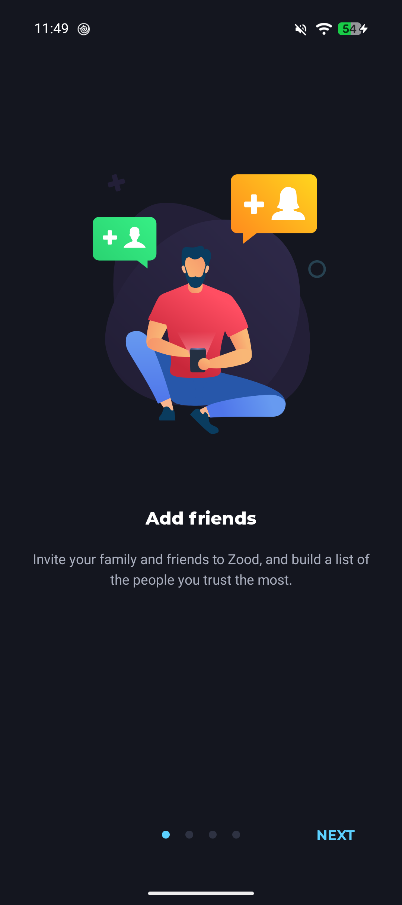
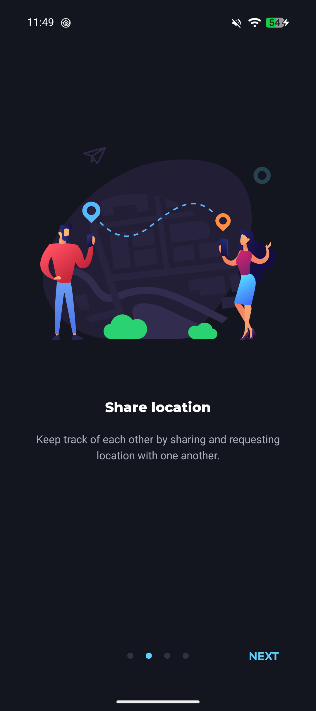
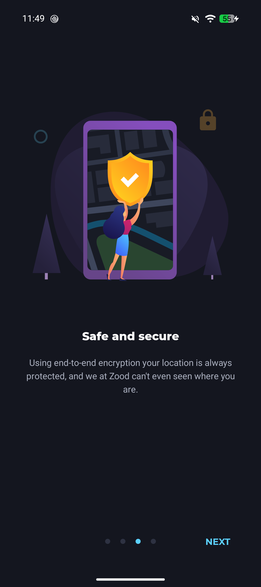
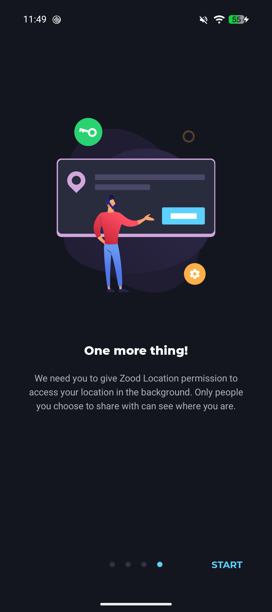
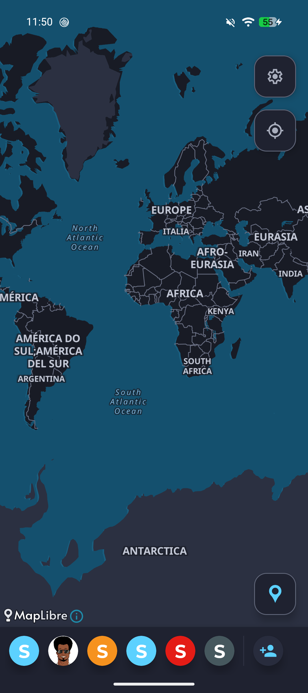
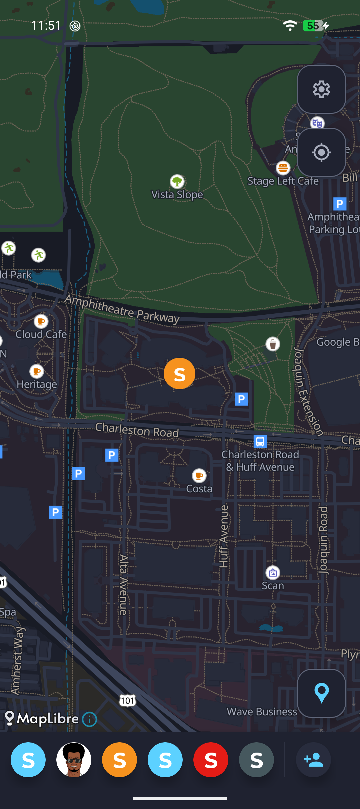

Dark mode is available in version 0.68 (GitHub & Play Store) of the Zood Location app for Android. It follows your device's appearance setting, but you can override it in the app's settings screen.






You can also subscribe to the blog's new RSS feed, which contains the full body of posts.